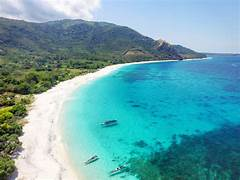
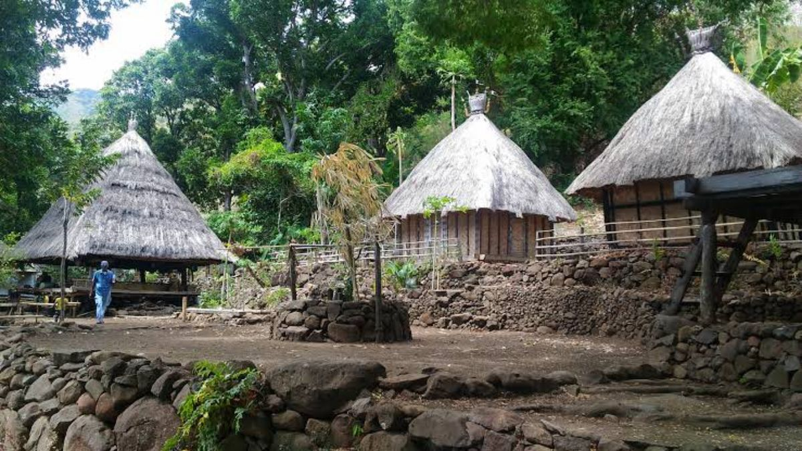
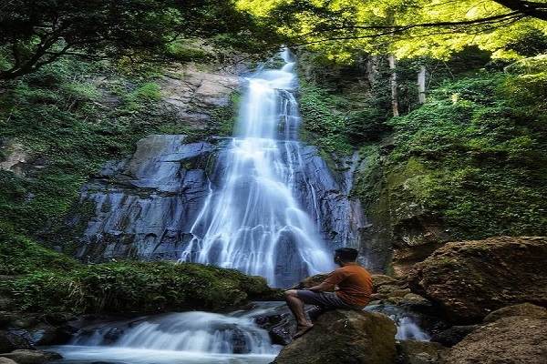
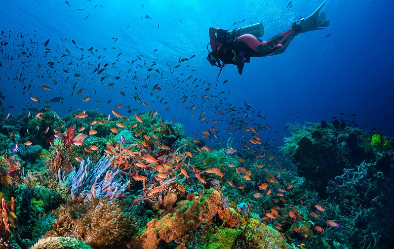

🏝 Wisata Kabupaten Alor
Kabupaten Alor memiliki banyak tempat wisata yang indah. Mari kita mengenalnya.

Kabupaten Alor memiliki banyak tempat wisata yang indah. Mari kita mengenalnya.

Pantai Mali memiliki pasir putih, air laut yang jernih, dan pemandangan yang sangat indah.
Pulau Kepa terkenal dengan laut biru yang bersih dan cocok untuk berenang serta melihat ikan.

Di Desa Takpala kita dapat melihat rumah adat dan mengenal budaya masyarakat Alor.

Air terjun di Alor memiliki air yang jernih dan suasana yang sejuk.

Laut Alor terkenal di dunia karena memiliki terumbu karang yang indah dan banyak ikan berwarna-warni.
Buanglah sampah pada tempatnya dan jagalah kebersihan pantai agar tetap indah.
Lanjut Belajar →